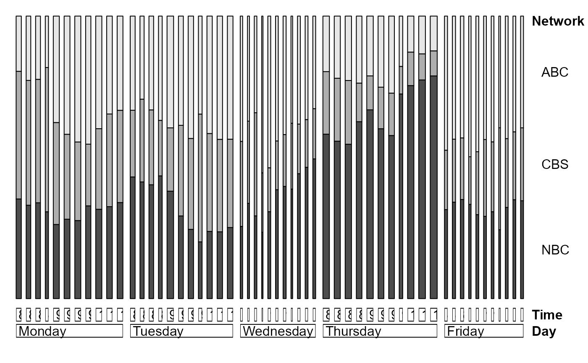
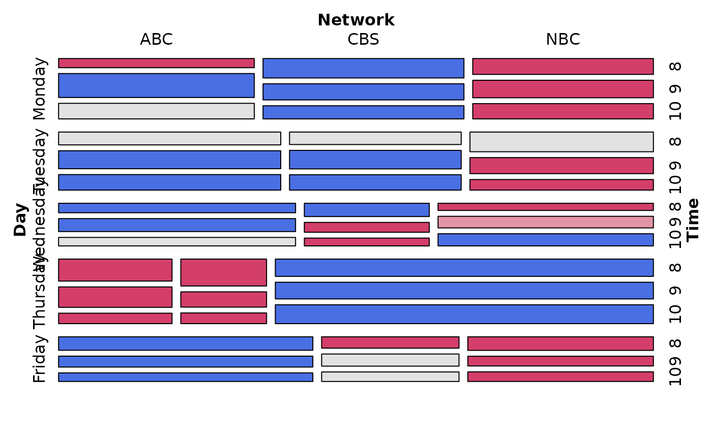
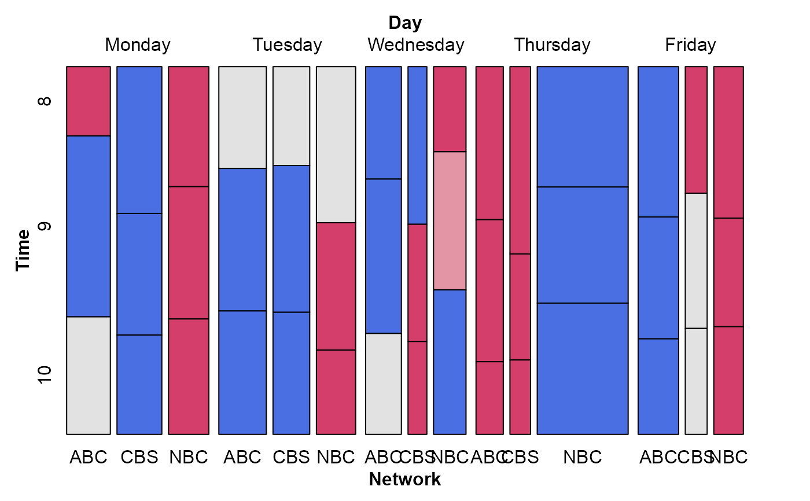

TV Viewing Data
TV.RdThis data set TV comprises a 5 x 11 x 3 contingency table based on
audience viewing data from Neilsen Media Research for the week starting
November 6, 1995.
Usage
data(TV)Format
A 5 x 11 x 3 array of cell frequencies with the following structure:
int [1:5, 1:11, 1:3] 146 244 233 174 294 151 181 161 183 281 ...
- attr(*, "dimnames")=List of 3
..$ Day : chr [1:5] "Monday" "Tuesday" "Wednesday" "Thursday" ...
..$ Time : chr [1:11] "8:00" "8:15" "8:30" "8:45" ...
..$ Network: chr [1:3] "ABC" "CBS" "NBC"
Details
The original data, tv.dat, contains two additional networks: "Fox" and "Other", with small
frequencies. These levels were removed in the current version.
There is also a fourth factor, transition State
transition (turn the television Off, Switch channels, or Persist in viewing the current channel).
The TV data here includes only the Persist observations.
Source
The original data, tv.dat, came from the initial implementation of
mosaic displays in R by Jay Emerson (1998). Similar data had been used by
Hartigan and Kleiner (1984) as an illustration.
References
Friendly, M. and Meyer, D. (2016). Discrete Data Analysis with R: Visualization and Modeling Techniques for Categorical and Count Data. Boca Raton, FL: Chapman & Hall/CRC. http://ddar.datavis.ca.
Emerson, John W. Mosaic Displays in S-PLUS: A General Implementation and a Case Study. Statistical Graphics and Computing Newsletter, 1998, 9(1), 17--23, http://www.stat.yale.edu/~jay/R/mosaic/v91.pdf
Hartigan, J. A. & Kleiner, B. A Mosaic of Television Ratings. The American Statistician, 1984, 38, 32-35.
Examples
data(TV)
structable(TV)
#> Time 8:00 8:15 8:30 8:45 9:00 9:15 9:30 9:45 10:00 10:15 10:30
#> Day Network
#> Monday ABC 146 151 156 83 325 350 386 340 352 280 278
#> CBS 337 293 304 233 311 251 241 164 252 265 272
#> NBC 263 219 236 140 226 235 239 246 279 263 283
#> Tuesday ABC 244 181 231 205 385 283 345 192 329 351 364
#> CBS 173 180 184 109 218 235 256 250 274 263 261
#> NBC 315 254 280 241 370 214 195 111 188 190 210
#> Wednesday ABC 233 161 194 156 339 264 279 140 237 228 203
#> CBS 158 126 207 59 98 103 122 86 109 105 110
#> NBC 134 146 166 66 194 230 264 143 274 289 306
#> Thursday ABC 174 183 197 181 187 198 211 86 110 122 117
#> CBS 196 185 195 104 106 116 116 47 102 84 84
#> NBC 515 463 472 477 590 473 446 349 649 705 747
#> Friday ABC 294 281 305 239 278 246 245 138 246 232 233
#> CBS 130 144 154 81 129 153 136 126 138 136 152
#> NBC 195 220 248 160 172 164 169 85 183 198 204
doubledecker(TV)

# reduce number of levels of Time
TV.df <- as.data.frame.table(TV)
levels(TV.df$Time) <- rep(c("8:00-8:59", "9:00-9:59", "10:00-10:44"),
c(4, 4, 3))
TV2 <- xtabs(Freq ~ Day + Time + Network, TV.df)
# re-label for mosaic display
levels(TV.df$Time) <- c("8", "9", "10")
# fit mode of joint independence, showing association of Network with Day*Time
mosaic(~ Day + Network + Time,
data = TV.df,
expected = ~ Day:Time + Network,
legend = FALSE)

# with doubledecker arrangement
mosaic(~ Day + Network + Time,
data = TV.df,
expected = ~ Day:Time + Network,
split = c(TRUE, TRUE, FALSE),
spacing = spacing_highlighting,
legend = FALSE)
